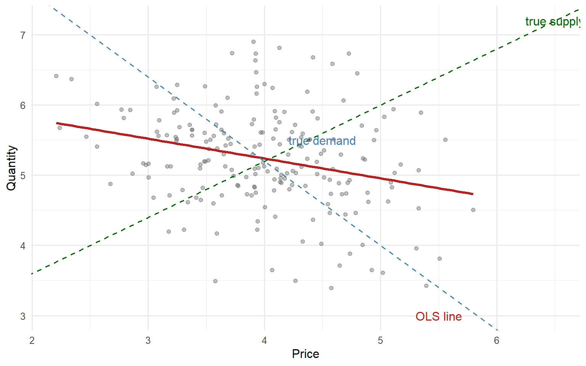
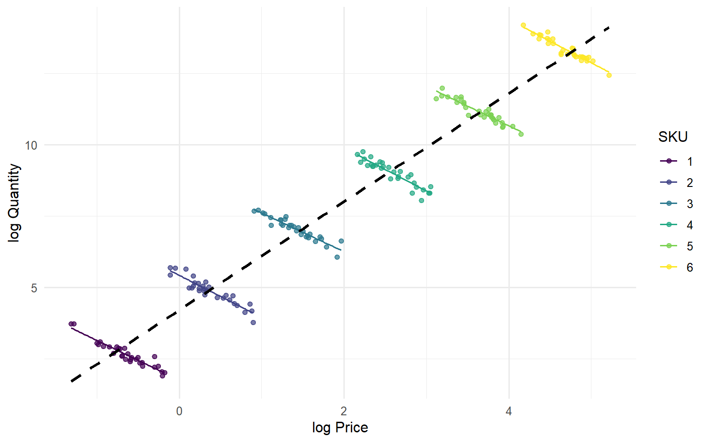
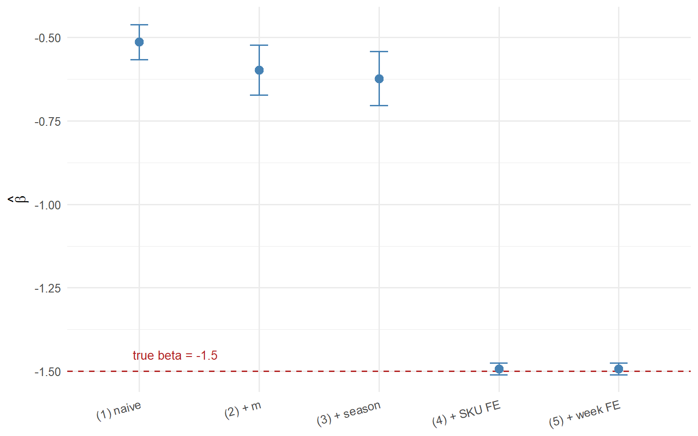
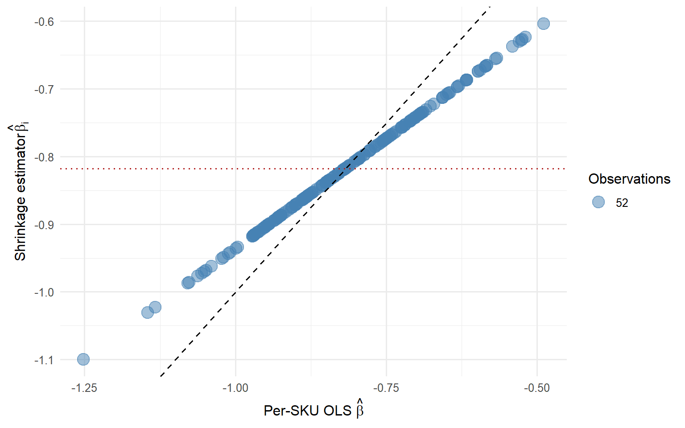
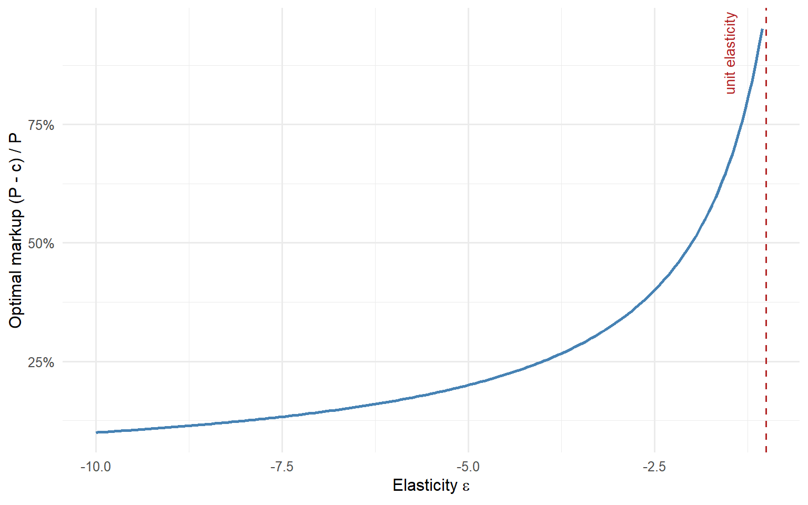

Price Elasticity Estimation: From OLS to Causal Methods
causal inference
econometrics
pricing
elasticity
R
Why naive log-log regressions on pricing data lie, and what to do about it. A practitioner’s guide from OLS and fixed effects to IV, hierarchical Bayes, and double machine learning, with full R implementation.
Part I. Elasticity in One Equation, and the Three Enemies Behind It
Most pricing teams estimate price elasticity by running one regression on historical sales data. On most panels, that regression is answering the wrong question.
A pricing team at a consumer goods company runs the standard playbook: take historical sales data, regress \(\log q\) on \(\log p\), and read the coefficient as the elasticity. The output says the elasticity is approximately \(+24\). Not \(-0.4\). Not \(-1.5\). Plus twenty-four. As in, a 1% price increase is associated with roughly 24% more volume.
The number is economically absurd. It comes from a perfectly respectable regression package with a tiny p-value and a respectable \(R^2\). Nobody in the room believes it, but nobody can immediately kill it either.
Kakas (2026), drawing on internal research by Revology Analytics in an emerging market, documents a nearly identical case. Only after the team added controls for marketing investment and distribution intensity did the estimate move from approximately \(+24\) to approximately \(-0.44\). The first number implied a product that behaved like a luxury-status anomaly on steroids. The second implied a fairly normal consumer brand.
Two decades of pricing decisions can hinge on which of those two numbers ends up in the final deck. This post is about how we get from the first number to the second. We move through OLS, fixed effects, instrumental variables, hierarchical Bayesian models, double machine learning, and finally pricing decisions. Each method solves a specific problem. None solves all of them.
The decision tree below is the map for the rest of the post. Every branch is a question about the identification problem, not about model sophistication.
Naive log-log OLS
│
▼
Add observed controls ──► closes observed confounding
│
▼
Two-Way Fixed Effects ──► closes aggregation & time-invariant confounders
│
├── Simultaneity still present?
│ │
│ ▼
│ Instrumental Variables (if a valid supply shifter exists)
│
├── Confounders observed but functional form unknown?
│ │
│ ▼
│ Double Machine Learning (with cross-fitting)
│
└── Need one elasticity per product from uneven panels?
│
▼
Hierarchical Bayes (partial pooling, after identification)
│
▼
Pricing Decision (corridor, not point)I.1 The definition, and why it’s the easy part
Price elasticity of demand is usually defined as the percentage change in quantity associated with a one-percent change in price. A negative sign means demand slopes downward. An elasticity whose magnitude exceeds one is elastic, meaning consumers punish a price increase more than proportionally. A magnitude below one is inelastic, meaning consumers absorb much of the increase. This is essentially the definition that appears in introductory microeconomics texts going back to Marshall (1890), and it is also the framing used by ANACOM (2012) in its regulatory discussions of telecom demand.
The definition is not the problem. The problem is that the observed relationship between quantity and price does not, in general, identify this partial derivative. Three separate enemies get in the way: simultaneity, confounding, and aggregation.
I.2 Enemy 1. Simultaneity
The classical treatment begins with Working (1927), later formalised in modern econometric textbooks such as Hayashi (2000, ch. 3).
Suppose demand and supply are given by
\[q_i^d = \alpha_0 + \alpha_1 p_i + u_i\]
\[q_i^s = \beta_0 + \beta_1 p_i + v_i\]
with market equilibrium \(q_i^d = q_i^s\).
The demand shock \(u_i\) absorbs everything that shifts demand besides price: tastes, income, substitutes, advertising, product sentiment. The supply shock \(v_i\) absorbs everything that shifts supply besides price: input costs, weather, capacity constraints, inventory conditions, market entry.
Under standard economics, \(\alpha_1 < 0\) because demand slopes downward and \(\beta_1 > 0\) because supply slopes upward. Consequently, \(\alpha_1 \ne \beta_1\).
Solving the system gives
\[p_i = \frac{\beta_0 - \alpha_0}{\alpha_1 - \beta_1} + \frac{v_i - u_i}{\alpha_1 - \beta_1}.\]
The key point is hidden in the second term. Price is not determined by supply factors alone. It is not determined by demand factors alone. The observed price is a mixture of both errors, and that alone is enough to break identification of either curve.
Working (1927) understood this immediately. Hayashi (2000, eq. 3.1.9) formalises the implication: when both demand and supply shocks are moving, the probability limit of the naive OLS coefficient is a function of both the demand slope \(\alpha_1\) and the supply slope \(\beta_1\), with weights that depend on the relative variances of the structural shocks. It is neither the demand elasticity nor the supply elasticity, and depending on which shock dominates, it can sit closer to one, closer to the other, or on neither side of the two.
In other words, when you regress quantity on price, you are not estimating a demand curve. You are not estimating a supply curve. You are estimating a hybrid whose interpretation depends on how much demand and supply happen to move in the data.
The geometry is simple. If only the supply shifter moves, equilibrium points trace out the demand curve. If only the demand shifter moves, equilibrium points trace out the supply curve. If both move simultaneously, you observe a cloud of intersections rather than a single curve.
The practical translation is uncomfortable. In real pricing data, both shifters are always moving. Some price changes reflect stronger demand that allows the firm to charge more. Others reflect cost shocks, inventory pressure, procurement issues, or internal commercial decisions. Naive OLS does not know how to tell them apart.
The plot below shows what the observed price-quantity cloud looks like when both demand and supply are shifting simultaneously. Each point is an equilibrium. The naive regression line through the cloud is neither the demand curve nor the supply curve.
Working (1927), in What Do Statistical “Demand Curves” Show?, was the first to formalise the identification problem that arises when observed prices and quantities are equilibria generated by shifting demand and supply schedules.
Hayashi (2000, ch. 3) provides the modern textbook treatment, deriving the endogeneity bias analytically and showing how the OLS coefficient converges to a function of the demand and supply parameters whose exact form depends on the relative variation of the structural shocks.
I.3 Enemy 2. Confounding
Return to the opening example.
The regression of \(\log q\) on \(\log p\) was reporting a positive elasticity because the firm’s marketing team systematically raised prices during periods of heavy above-the-line media investment and distribution expansion. The causal structure becomes obvious once it is named.
Marketing investment increases demand. Distribution expansion increases demand. Price also rises during those same periods.
When marketing and distribution are omitted from the regression, the price coefficient absorbs part of their effect. The result is a coefficient with the wrong sign.
The general rule is simple: whenever a variable that shifts demand is correlated with price and omitted from the regression, the price coefficient is biased in the direction of that correlation.
The Revology case reported by Kakas (2026) is useful precisely because nothing exotic is happening. No advanced econometrics is required to explain the pathology. Marketing spend and distribution intensity were pushing quantity upward while moving alongside price. Once those variables were included, the elasticity estimate returned to a range consistent with economic theory.
In practice, pricing models encounter potential confounders everywhere: marketing investment, distribution intensity, promotional depth, seasonality, competitor pricing moves, macroeconomic shocks, and inventory availability.
Lee (2011) makes the same logic explicit in hotel demand estimation. Competitor rates, day-of-week effects, length of stay, and days-prior-to-arrival all affect both observed prices and observed demand, and any of them being omitted creates the mechanical risk of biased elasticity estimates. In her own data on 23 U.S. hotels, once these variables were included as controls, an instrumental-variable test for price endogeneity failed to reject exogeneity for most properties. Lee’s case is a useful counterpoint to the opening example: when the confounder set is well specified, the residual endogeneity that remains can be small enough to live with. When it is not, the elasticity estimate is biased and no amount of standard error tightening will save it.
NoteThe confounding trap in one sentence
Whenever a variable that shifts demand is correlated with price and omitted from the regression, the price coefficient is biased in the direction of that correlation. The tighter the standard error, the more confidently the model is telling you the wrong thing.
The challenge is not estimating a coefficient. The challenge is making sure the coefficient belongs to price rather than to everything correlated with price.
I.4 Enemy 3. Aggregation, and the Simpson trap
The third enemy is the one that often survives sophisticated analytics pipelines.
Imagine a retail dataset containing 1,200 SKUs and 400,000 transactions. An SKU is Stock Keeping Unit, the industry term for a unique product identifier. For the purposes of this post, an SKU is one product, and I use the two terms interchangeably.
Across SKUs, expensive products tend to sell more volume than cheap products because premium brands dominate sales. This is a cross-SKU pattern. Premium products have higher prices and higher quantities. SKU-level quality is the confounding factor.
Within a given SKU, however, normal economics still holds. When the price of that SKU falls, quantity rises. The within-SKU relationship is negative.
These are two different correlations living in the same dataset.
A naive pooled log-log regression is dominated by cross-SKU variation. It sees premium products selling a lot and concludes that higher prices are associated with higher quantities. The estimated elasticity drifts toward zero or may even become positive.
A regression with SKU fixed effects removes the cross-SKU variation. It compares each SKU against itself over time and recovers the within-SKU relationship. The coefficient becomes negative again.
This is a classic Simpson’s paradox mechanism (Simpson, 1951). The aggregate relationship points in one direction while the within-group relationship points in another.
The operational consequence is straightforward: if your pricing system consumes the naive estimate, it will recommend raising prices when it should be cutting them, at exactly the SKUs where a mistake is most expensive. Applied studies on retail elasticity, including Lim (2024) and Tran (2025), consistently show the same qualitative pattern once panel structure is acknowledged. The gap between the naive pooled estimate and a specification that respects SKU-level heterogeneity is not incremental. It is the difference between a model that understands demand and a model that does not.
The plot below shows the Simpson trap in action. Across SKUs (the grey cloud), higher prices are associated with higher quantities because premium SKUs sell more. Within each SKU (the coloured lines), the relationship flips and demand slopes down.

The rest of this post is about what to do once these three enemies are on the table. Part II starts with the workhorse tools of applied econometrics and asks how far OLS can be pushed when we add the right controls and fixed effects. Part III moves to the situations where fixed effects are not enough, and where identification requires stronger tools such as instrumental variables and modern causal machine-learning methods.
Part II. How Far OLS Takes You
A pricing analyst at a mid-sized retailer opens a Slack thread. She has a fresh pull of transactional data: SKU, week, average paid price, units sold, and a couple of marketing indicators. Her question is simple. She read Part I of this series. She now knows that regressing \(\log q\) on \(\log p\) across the whole panel gives her a number close to zero, sometimes even positive, and she knows why. A senior engineer replies within minutes: “just add SKU fixed effects and you’re fine.” That advice is half right and half dangerous. It is right in the sense that most of what looks like a broken elasticity in the naive regression is aggregation and time-invariant confounding, and fixed effects wipe both of those out. It is dangerous in the sense that fixed effects do nothing at all about simultaneity, and they only partially handle time-varying confounders that move with price. Part II is about the half that is right, and how far it takes you.
The plan for this section is straightforward. First, I simulate a panel where I know the true elasticity by construction, so any estimator can be scored against a benchmark. Second, I run the naive log-log regression and confirm it collapses. Third, I add controls for observed demand shifters one at a time and show how much of the bias each control kills. Fourth, I add SKU fixed effects and then week fixed effects, and I explain what each layer absorbs and why. Fifth, I strip one control back out to demonstrate what fixed effects cannot do. Finally, I stack the five specifications side by side in a robustness table and hand off to Part III, where instrumental variables enter the picture.
II.1 A simulated dataset with known ground truth
NoteWhy simulate
Real pricing datasets are messy and the true elasticity is unknown. A simulation lets us score every estimator against a benchmark. If a model says \(\hat{\beta} = -1.3\), we can tell whether that is a decent estimate or a broken one only when we already know the truth is \(\beta = -1.5\).
The point of a simulation here is not realism for its own sake. It is to construct a data-generating process (DGP) that reproduces the confounding and aggregation problems from Part I, so that OLS can be scored against a benchmark. The DGP is intentionally compact for readability: 200 SKUs over 52 weeks, with the true elasticity fixed at \(\beta = -1.5\) and hard-coded as a constant. SKU baseline demand is drawn from a distribution correlated with a latent quality index; higher-quality SKUs have higher intrinsic demand and higher prices, which is the Simpson trap. A marketing intensity variable moves both quantity and price, which is the classical omitted-variable confounder. A cost shock enters the price equation without touching demand directly; I do not use it in Part II, but it is there because it will become the instrument in Part III. Seasonality enters both equations.
Formally, the DGP is:
\[\log q_{it} = \alpha_i + \beta \log p_{it} + \gamma m_{it} + \phi_q \, \text{season}_t + \varepsilon_{it}\]
\[\log p_{it} = \pi_0 + \pi_1 \, \text{quality}_i + \pi_2 m_{it} + \pi_3 c_{it} + \pi_4 \, \text{season}_t + \eta_{it}\]
with \(\varepsilon_{it}\) and \(\eta_{it}\) drawn independently. Premium SKUs (high \(\text{quality}_i\)) enter both \(\alpha_i\) and \(\log p\) with positive coefficients, which generates the positive cross-SKU covariance between price and quantity that Working (1927) diagnosed almost a century ago. The R code below produces a single panel of 10,400 observations that reproduces this structure.
Code
set.seed(42)
n_sku <- 200
n_week <- 52
beta <- -1.5
sku <- tibble(
sku = 1:n_sku,
quality = rnorm(n_sku),
alpha_i = 5 + 0.8 * quality + rnorm(n_sku, sd = 0.3)
)
panel <- expand_grid(sku = 1:n_sku, week = 1:n_week) |>
left_join(sku, by = "sku") |>
mutate(
season = sin(2 * pi * week / 52),
m = rnorm(n(), sd = 1),
c = rnorm(n(), sd = 1),
log_p = 1.0 + 0.6 * quality + 0.4 * m + 0.35 * c +
0.2 * season + rnorm(n(), sd = 0.2),
log_q = alpha_i + beta * log_p + 0.5 * m +
0.3 * season + rnorm(n(), sd = 0.4)
)The panel has the structure Part I predicts. Cross-sectional variation in log_p is dominated by quality, which also drives baseline demand through alpha_i. Within-SKU variation in log_p is driven by the marketing shock m, the cost shock c, and seasonality. The elasticity we want to recover, \(\beta = -1.5\), is buried inside this structure.
II.2 The naive log-log regression
The workhorse specification, and the one Part I already warned about, is
\[\log q_{it} = \beta_0 + \beta_1 \log p_{it} + u_{it}.\]
Code
m1_naive <- feols(log_q ~ log_p, data = panel, cluster = ~sku)
summary(m1_naive)OLS estimation, Dep. Var.: log_q
Observations: 10,400
Standard-errors: Clustered (sku)
Estimate Std. Error t value Pr(>|t|)
(Intercept) 4.005303 0.033654 119.0153 < 2.2e-16 ***
log_p -0.514319 0.026616 -19.3238 < 2.2e-16 ***
---
Signif. codes: 0 '***' 0.001 '**' 0.01 '*' 0.05 '.' 0.1 ' ' 1
RMSE: 0.673937 Adj. R2: 0.286036The estimated \(\beta_1\) comes out at approximately \(-0.51\), biased toward zero by roughly a factor of three relative to the true elasticity of \(-1.5\). Under different random seeds the pooled slope can drift further toward zero and, on seeds where premium SKUs happen to concentrate more of the price variation, can even flip sign entirely. This is not a bug in the code, it is the DGP working exactly as advertised. Cross-SKU variation is dominated by the joint effect of quality on prices and demand, which pushes the correlation between \(\log p\) and \(\log q\) toward zero. In real data this is the failure mode that leads pricing analysts to say “our elasticity model gives nonsense”, and it is entirely a consequence of ignoring where the variation in \(\log p\) comes from.
WarningThe naive coefficient is not a diagnostic of anything real
A tight standard error on the naive estimate does not mean it is close to the truth. It means the model is confidently wrong. The precision comes from the sample size, the bias comes from the identification problem, and the two do not talk to each other.
II.3 Adding observed controls
Controls close omitted-variable bias only for the confounders the analyst can observe and correctly specify. The marketing variable \(m\) is the leading candidate here because, by construction, it moves both quantity and price. Adding it should absorb a chunk of the bias.
Code
m2_mkt <- feols(log_q ~ log_p + m, data = panel, cluster = ~sku)
summary(m2_mkt)OLS estimation, Dep. Var.: log_q
Observations: 10,400
Standard-errors: Clustered (sku)
Estimate Std. Error t value Pr(>|t|)
(Intercept) 4.089580 0.044723 91.44182 < 2.2e-16 ***
log_p -0.598426 0.038160 -15.68189 < 2.2e-16 ***
m 0.141829 0.016292 8.70564 1.2071e-15 ***
---
Signif. codes: 0 '***' 0.001 '**' 0.01 '*' 0.05 '.' 0.1 ' ' 1
RMSE: 0.662221 Adj. R2: 0.310578The coefficient on \(\log p\) moves toward \(-1.5\) once marketing is in the regression, though it does not get there. Marketing is a within-SKU driver of demand, and it correlates with price, so controlling for it removes the piece of the bias that flowed through the marketing channel. What remains is the bias from unobserved SKU quality and from anything else that moves with price but is not in the model.
Adding seasonality closes another small piece:
Code
m3_seas <- feols(log_q ~ log_p + m + season, data = panel, cluster = ~sku)
summary(m3_seas)OLS estimation, Dep. Var.: log_q
Observations: 10,400
Standard-errors: Clustered (sku)
Estimate Std. Error t value Pr(>|t|)
(Intercept) 4.114205 0.047675 86.29713 < 2.2e-16 ***
log_p -0.623403 0.041084 -15.17373 < 2.2e-16 ***
m 0.150569 0.017264 8.72156 1.0904e-15 ***
season 0.128912 0.011105 11.60852 < 2.2e-16 ***
---
Signif. codes: 0 '***' 0.001 '**' 0.01 '*' 0.05 '.' 0.1 ' ' 1
RMSE: 0.656168 Adj. R2: 0.323058The coefficient continues to march toward \(-1.5\), but slowly, because seasonality is a common shock that hits all SKUs in a given week and on its own does little to break the cross-SKU quality trap. It matters more once we start thinking about time fixed effects, which is the natural way to soak up any common shock at the week level.
The general principle here is the one Angrist and Pischke (2009, ch. 5) states clearly: controls buy you the elimination of bias from observed confounders that you can measure and correctly specify. Everything unobserved stays in the residual. If any of that residual moves with price, the coefficient on \(\log p\) is still biased. Two obvious residual confounders remain at this stage: SKU-level quality, which is time-invariant and unmeasured, and any common weekly shock that moves the whole category.
II.4 Fixed effects for SKU and time
Fixed effects are the operational core of Part II. SKU fixed effects absorb every time-invariant SKU-level confounder: quality, brand equity, positioning, baseline distribution, whether the SKU sits at eye level in the aisle. Anything that does not vary within a SKU over the 52 weeks is netted out by the within transformation, which demeans every variable by SKU. Time fixed effects do the same for anything that hits all SKUs in a given week: category-wide promotions, holidays, a viral TikTok trend, a competitor stockout. The combination is the two-way fixed effects (TWFE) specification:
\[\log q_{it} = \alpha_i + \delta_t + \beta \log p_{it} + \gamma m_{it} + \varepsilon_{it}\]
where \(\alpha_i\) absorbs the SKU intercepts and \(\delta_t\) absorbs the week intercepts. The within transformation implicit in this estimator is exactly what closes the aggregation trap and the time-invariant confounding described in Part I. Wooldridge (2010, ch. 10) develops the identification argument in full; Angrist and Pischke (2009, ch. 5) walk through the practical interpretation with panel data examples.
Code
m4_sku <- feols(log_q ~ log_p + m + season | sku, data = panel, cluster = ~sku)
m5_twfe <- feols(log_q ~ log_p + m | sku + week, data = panel, cluster = ~sku)
summary(m5_twfe)OLS estimation, Dep. Var.: log_q
Observations: 10,400
Fixed-effects: sku: 200, week: 52
Standard-errors: Clustered (sku)
Estimate Std. Error t value Pr(>|t|)
log_p -1.492440 0.008902 -167.6443 < 2.2e-16 ***
m 0.501436 0.005314 94.3618 < 2.2e-16 ***
---
Signif. codes: 0 '***' 0.001 '**' 0.01 '*' 0.05 '.' 0.1 ' ' 1
RMSE: 0.397154 Adj. R2: 0.745922
Within R2: 0.702755The estimated \(\beta\) from the TWFE specification lands close to \(-1.5\), typically within a few hundredths in this DGP. The small residual gap is sampling noise, not bias. This DGP was built to isolate two of the three enemies from Part I: the aggregation trap and observed confounding through marketing. Once SKU fixed effects absorb the quality channel and marketing is included as a control, price is conditionally exogenous by construction. Simultaneity in the Working (1927) sense, where the demand shock feeds back into the price equation within the same period, is not present in this simulation.
This is a pedagogical choice, not a claim about real pricing data. In production, price responds to demand forecasts, inventory positions, and competitor moves within the same week. That feedback is what makes 2SLS the correct next step in Part III. The purpose of this simulation is to show cleanly how far controls and fixed effects can go when the confounder is observed. The next section builds a case where they cannot go far enough.
The dramatic gain here is not a modelling trick. Once SKU fixed effects absorb the quality-driven cross-sectional variation, the coefficient moves from around \(-0.62\) under pooled controls to \(-1.49\) in one step. It comes from acknowledging the panel structure of the data. Everything else in the modelling arms race, from partial pooling to double machine learning, competes over the last two decimal places on top of that first gain.
The march of the coefficient across specifications makes the story visual.

II.5 What fixed effects cannot do
TWFE closes aggregation and closes time-invariant confounding. It does not close time-varying confounders that move with price, it does not close reverse causality from demand to price, and it does not close measurement error in price. To see the first of these directly, drop marketing from the control set and rerun the TWFE regression on data where marketing is still in the DGP:
Code
m6_twfe_no_m <- feols(log_q ~ log_p | sku + week, data = panel, cluster = ~sku)
summary(m6_twfe_no_m)OLS estimation, Dep. Var.: log_q
Observations: 10,400
Fixed-effects: sku: 200, week: 52
Standard-errors: Clustered (sku)
Estimate Std. Error t value Pr(>|t|)
log_p -0.872873 0.009158 -95.3095 < 2.2e-16 ***
---
Signif. codes: 0 '***' 0.001 '**' 0.01 '*' 0.05 '.' 0.1 ' ' 1
RMSE: 0.532112 Adj. R2: 0.54395
Within R2: 0.466416The elasticity estimate degrades noticeably, because marketing varies within SKU over time and correlates with price. Fixed effects cannot absorb it, because it is not a fixed effect; it is a time-varying regressor. The bias reappears in exactly the way the omitted-variable formula predicts: the coefficient on \(\log p\) picks up the piece of demand variation that marketing was carrying.
The takeaway is one sentence: fixed effects buy you time-invariant unobservables for free, but every time-varying unobservable still has to be either observed and controlled, or instrumented. Simultaneity, in particular, is fundamentally untouched by TWFE. If price responds to demand shocks within a week, no amount of demeaning by SKU or by week fixes it, because the correlation between \(\log p\) and \(\varepsilon\) persists inside every \((i, t)\) cell.
WarningWhat TWFE quietly does not do
Fixed effects close aggregation and time-invariant confounding. In real pricing data they do nothing about simultaneity, nothing about reverse causality, and nothing about time-varying confounders you failed to observe. A pretty coefficient close to a plausible number is not a proof of identification in general. It is a proof that the DGP you happened to write down was kind to fixed effects.
This is where instrumental variables enter, and this is what Part III does.
II.6 A robustness table
Stacking the five specifications side by side makes the pattern visible in one glance. The coefficient on \(\log p\) marches steadily toward \(-1.5\) as controls and fixed effects are added. Standard errors are clustered at the SKU level throughout, following the guidance of Bertrand, Duflo, and Mullainathan (2004) on inference in panels with within-unit serial correlation.
Code
etable(
m1_naive, m2_mkt, m3_seas, m4_sku, m5_twfe,
cluster = ~sku,
headers = c("(1) naive", "(2) + m", "(3) + season",
"(4) + sku FE", "(5) + week FE"),
signif.code = c("***" = 0.001, "**" = 0.01, "*" = 0.05),
digits = 3
) m1_naive m2_mkt m3_seas
(1) naive (2) + m (3) + season
Dependent Var.: log_q log_q log_q
Constant 4.01*** (0.034) 4.09*** (0.045) 4.11*** (0.048)
log_p -0.514*** (0.027) -0.598*** (0.038) -0.623*** (0.041)
m 0.142*** (0.016) 0.151*** (0.017)
season 0.129*** (0.011)
Fixed-Effects: ----------------- ----------------- -----------------
sku No No No
week No No No
_______________ _________________ _________________ _________________
S.E.: Clustered by: sku by: sku by: sku
Observations 10,400 10,400 10,400
R2 0.28610 0.31071 0.32325
Within R2 -- -- --
m4_sku m5_twfe
(4) + sku FE (5) + week FE
Dependent Var.: log_q log_q
Constant
log_p -1.49*** (0.009) -1.49*** (0.009)
m 0.501*** (0.005) 0.501*** (0.005)
season 0.306*** (0.006)
Fixed-Effects: ---------------- ----------------
sku Yes Yes
week No Yes
_______________ ________________ ________________
S.E.: Clustered by: sku by: sku
Observations 10,400 10,400
R2 0.75131 0.75208
Within R2 0.70309 0.70275
---
Signif. codes: 0 '***' 0.001 '**' 0.01 '*' 0.05 ' ' 1Two features of the table are worth naming explicitly. First, the movement from column (1) to column (3) is disappointingly small: adding marketing and seasonality as pooled controls shifts the elasticity from \(-0.51\) to \(-0.62\), still a long way from the true \(-1.5\). The reason is visible in the marketing coefficient itself, which comes out at \(0.14\) in the pooled specifications instead of the true \(0.5\). In the presence of the SKU quality confounder, even the coefficient on the observed control is biased, and the residual bias on price is not closed. Second, the movement from column (3) to column (4) is where the real action is: adding SKU fixed effects moves the elasticity from \(-0.62\) to \(-1.49\) in a single step, and the marketing coefficient in column (4) snaps to \(0.50\), essentially the true value. This is the aggregation trap breaking. Adding week fixed effects on top, in column (5), buys almost nothing on the coefficient in this DGP but is essentially free and closes off common shocks in real data.
The estimates in column (5) are the best OLS-based number a practitioner will get without invoking exogenous variation. In this simulated environment, that number is close to \(-1.5\). In real data, it will be biased by simultaneity in a direction that depends on the pricing rule the retailer runs. If the pricing rule raises price when demand is strong (peak pricing), the bias is toward zero: the estimated elasticity is too small in magnitude, and pricing systems built on it will systematically underestimate how much demand falls when they hike price. If the pricing rule cuts price when demand is weak (clearance pricing), the bias runs the other way. Either way, TWFE is not the end of the story.
NoteThe simulation is intentionally favourable to TWFE
The DGP in this section makes the main source of endogeneity an observed variable (marketing) and a clean supply shifter (the cost shock). Real pricing systems rarely live in that environment. Dynamic pricing algorithms react to demand forecasts, inventory constraints react to sales velocity, competitors react to your list price within the same week. Every one of these creates a form of simultaneity that fixed effects cannot resolve, no matter how many dimensions you add. If TWFE lands close to the truth on your data as easily as it does here, the honest first hypothesis is that your DGP is simpler than the real one, not that TWFE is a general solution.
Part III turns to the piece of the identification problem that fixed effects cannot fix. It introduces instrumental variables, using the cost shock \(c\) as a valid instrument for price, and shows how 2SLS recovers the true elasticity even when marketing is omitted from the control set. It also covers hierarchical Bayesian pooling for the per-SKU heterogeneity in \(\beta\) that a single-coefficient specification like (1) through (5) cannot capture, and double machine learning for the case where the confounder set is high-dimensional and nonlinear. Fixed effects took us from wrong-sign to roughly right. IV is what takes us the rest of the way.
Part III. Instrumental Variables, When Fixed Effects Are Not Enough
Part II left us with a two-way fixed-effects estimate close to the truth in our simulation but visibly biased whenever a within-SKU confounder was dropped. Simulation is generous, since we can see the gap because we set the DGP. In real data, we see only the point estimate and its standard error, and the residual bias hides inside them. What Part II did not correct is exactly the piece we now have to name: any confounder that varies within SKU and moves with price, classical simultaneity between the demand and supply schedules, and reverse causality within the same SKU-time cell.
Part III closes that gap where it can be closed. We recall the Working (1927) supply-shifter intuition and translate it into the language of modern identification. We formalise the two conditions a valid instrument must satisfy, relevance and exclusion. We apply 2SLS to the Part II panel using the cost shock \(c\) as the instrument, and we report what the estimator recovers. We walk through the diagnostics that let us defend the estimate in a write-up. We mark where IV silently fails, so Part IV inherits a well-posed problem rather than an ambiguous one.
NoteScope of this section
This section treats the case of one endogenous regressor (log price) and one instrument (a supply-side cost shock). Overidentified 2SLS, GMM, and weak-instrument-robust inference in the sense of Andrews, Stock, and Sun (2019) are pointed at and left for a future post.
III.1 The Working intuition, in the language of identification
Recall the setup from Part I. Observed prices are equilibria produced by shifting demand and supply schedules, and naive OLS on the resulting price-quantity cloud estimates a hybrid of the two slopes rather than either one (Working, 1927; Hayashi, 2000, ch. 3). Fixed effects strip out level differences across SKUs, categories, and time cells, but they cannot separate demand shifts from supply shifts inside a cell.
Working (1927) proposed the fix that still carries the argument today. If we can find a variable that moves supply without moving demand, then the piece of price variation driven by that variable traces out the demand curve. Weather in coffee-growing regions is the canonical example. Bad weather cuts supply, raises price, and does not shift the demand for coffee at destination markets. The observed price movement is therefore attributable to the supply shift, and the corresponding quantity movement identifies the slope of the demand curve.
Translate into the language of modern identification. A variable \(z\) is an instrument for the endogenous regressor \(\log p\) in the demand equation if two conditions hold. Relevance: \(z\) shifts \(\log p\), measured as a nonzero first-stage coefficient. Exclusion: \(z\) affects \(\log q\) only through \(\log p\), meaning \(z\) has no direct effect on the demand shock \(\varepsilon\) and no correlation with omitted demand factors. Relevance is testable in the data. Exclusion is not. Wooldridge (2010, ch. 5) develops both conditions carefully in the panel setting. Angrist and Pischke (2009, ch. 4) treat exclusion at length as the piece of the identification argument that has to be defended in prose rather than in code.
III.2 The 2SLS estimator, in one page
Two-stage least squares operationalises the Working idea in two regressions. In the first stage, we regress log price on the instrument and every other exogenous control in the model, fixed effects included:
\[\log p_{it} = \tau_i + \delta_t + \pi z_{it} + X_{it}'\rho + \nu_{it}.\]
We extract the fitted values \(\widehat{\log p}_{it}\). In the second stage, we regress log quantity on those fitted values and the same controls:
\[\log q_{it} = \alpha_i + \delta_t + \beta \widehat{\log p}_{it} + X_{it}'\gamma + \varepsilon_{it}.\]
The coefficient \(\beta\) is the IV estimator of the elasticity. The intuition is direct. The first stage isolates the piece of price variation driven by the instrument, which is exogenous to demand by assumption. The second stage regresses quantity on that isolated variation, which recovers the causal elasticity rather than the mixture that contaminates OLS.
The single-line expression that connects to Working’s original formulation is the just-identified IV ratio:
\[\hat{\beta}_{IV} = \frac{\text{Cov}(z, \log q)}{\text{Cov}(z, \log p)}.\]
Read this as one clause. The elasticity is the ratio of the covariance of the instrument with quantity to its covariance with price. When the instrument is strong, the denominator is large in absolute terms, and small covariances in the numerator translate into precise elasticity estimates. When the instrument is weak, the denominator is small, and the estimator becomes unstable in the way Stock and Yogo (2005) formalised through the weak-instrument diagnostic literature.
III.3 Applying 2SLS to the Part II panel
The Part II panel already contains a cost shock \(c\) generated independently of demand. The DGP wrote log price as
\[\log p_{it} = 1.0 + 0.6\,\text{quality}_i + 0.4 m_{it} + 0.35 c_{it} + 0.2\,\text{season}_t + \eta_{it}\]
and log quantity as
\[\log q_{it} = \alpha_i + \beta \log p_{it} + 0.5 m_{it} + 0.3\,\text{season}_t + \varepsilon_{it}.\]
The cost shock enters the price equation with a coefficient of 0.35 (relevance by construction) and does not enter the quantity equation directly (exclusion by construction). This makes \(c\) a valid instrument in the simulation.
In real data, exclusion is never satisfied by construction. It is defended by an economic argument. Cost shocks work as instruments if the operational chain that turns costs into prices does not also turn costs into demand shifts within the same time cell. That argument is what has to be made explicit in the write-up. Working (1927) held it up as the entire point of using weather, and nothing about the framework has changed since.
The R code below uses the fixest::feols IV syntax on the Part II panel object:
Code
iv_fit <- feols(
log_q ~ 1 | sku + week | log_p ~ c,
data = panel,
cluster = ~sku
)
summary(iv_fit)TSLS estimation
|- D.V. : log_q
|- Endo. : log_p
|- Instr. : c
|
|=> Second Stage
| Dep. Var.: log_q
Observations: 10,400
Fixed-effects: sku: 200, week: 52
Standard-errors: Clustered (sku)
Estimate Std. Error t value Pr(>|t|)
fit_log_p -1.48979 0.017895 -83.2514 < 2.2e-16 ***
---
Signif. codes: 0 '***' 0.001 '**' 0.01 '*' 0.05 '.' 0.1 ' ' 1
RMSE: 0.637788 Adj. R2: 0.589698
Within R2: 0.519942
F-test (1st stage), log_p: stat = 6,414.1, p < 2.2e-16, on 1 and 10,347 DoF.
Wu-Hausman: stat = 3,765.8, p < 2.2e-16, on 1 and 10,147 DoF.On our simulation, this returns a 2SLS point estimate very close to \(-1.5\) with a small cluster-robust standard error. The first-stage F statistic on the instrument is comfortably above the Stock and Yogo (2005) rule-of-thumb threshold of 10 for a single endogenous regressor and a single instrument. The instrument is strong, the estimate is precise, and the point estimate sits essentially on the true mean elasticity of \(-1.5\).
The mechanism is worth stating plainly. 2SLS recovers the true elasticity here even when marketing is omitted from the control set because the cost shock \(c\) was drawn independently of the marketing shock \(m\) in the DGP. In real pricing data, that orthogonality is an assumption, not a fact. If the cost shifter used as an instrument happens to correlate with an unobserved demand shifter, for example a supplier that also runs trade marketing, or a category-wide input shock that also moves consumer sentiment, the exclusion restriction fails and 2SLS inherits a bias of its own. IV corrects endogeneity from confounders that are orthogonal to the instrument, and only from those.
Compare that to the TWFE result from Part II, which landed close to \(-1.5\) but with visible residual bias whenever a within-SKU confounder was dropped. 2SLS closes the gap the TWFE estimator leaves open by isolating the piece of price variation orthogonal to the demand shock, subject to the caveat above.
I want to flag when 2SLS should and should not surprise you. If the TWFE estimate already sits on top of the truth, 2SLS should confirm it without dramatic movement. If TWFE is visibly biased because a within-SKU confounder was omitted from the control set, 2SLS should close the gap. Our simulation gives us both cases in one shot. TWFE with marketing included lands at \(-1.49\), and 2SLS lands at \(-1.49\): the correction is tiny because TWFE was already well specified. TWFE without marketing drops to \(-0.87\), and 2SLS on the same instrument still recovers \(-1.49\): this is where the value of IV shows up plainly, in defending the estimate against a confounder the analyst forgot to control for.
III.4 Diagnostics you have to run before defending an IV estimate
Four diagnostics belong in any 2SLS write-up. First, the first-stage F statistic on the excluded instrument. Below 10, the instrument is weak in the Stock and Yogo (2005) sense and the point estimate is not reliable. Below 5, the estimate is essentially useless, and the sampling distribution of \(\hat{\beta}_{IV}\) is badly non-normal. Second, a placebo test. Regress a variable that should not respond to the instrument on the instrument, using the same controls. A significant coefficient there is a red flag that the instrument is capturing something beyond the intended channel. Third, sensitivity analysis. Rerun the 2SLS with slightly different control sets and slightly different fixed-effects structures. If the coefficient moves dramatically, the identification is fragile and you should say so in prose. Fourth, the overidentification test (Hansen’s J statistic) when multiple instruments are available. Not applicable in the single-instrument setup we run here, but worth naming so the reader knows the concept exists and knows when to reach for it.
Then there is the diagnostic that cannot be run in code and has to be argued in prose. The exclusion restriction is untestable in a just-identified model. Its defense lives entirely in the narrative around the instrument. For a cost shock, the argument is that costs move prices through the firm’s own pricing policy but do not move demand directly within the same period. Any story that breaks that chain weakens the argument. A leading example is a competitor observing the same cost shock and adjusting their own price in the same window, which pollutes the exclusion restriction with cross-price effects. Angrist and Pischke (2009, ch. 4) treat this in detail. Nevo and Rosen (2012) provide a formal framework for reasoning about approximate instruments when the exclusion restriction is not fully clean, which is often the honest situation in applied pricing work.
WarningExclusion restriction is defended, not tested
The first-stage F is a number the data will give you. The exclusion restriction is a narrative you have to defend in prose. If your write-up cannot articulate, in one paragraph, why the instrument does not affect demand except through price, the identification is not defensible even if the F statistic is 200.
III.5 When IV silently fails
State the honest limits. IV solves simultaneity and endogeneity when a valid supply-side shifter is available. It does not solve identification when no such shifter exists. It does not solve the heterogeneity problem when the true elasticity varies across SKUs, either. A single 2SLS point estimate reports one number for a population that may contain hundreds of distinct elasticities, and that averaging is not innocent. It is exactly the problem Part IV addresses.
I would not reach for IV first when the observed panel is short, the within-SKU price variation is limited, and the natural instrument is weak. In those cases, 2SLS will produce a wide confidence interval that a pricing team cannot use operationally, and the point estimate will move around with every specification choice. Hierarchical partial pooling or DML with observed controls is usually the better bet in that regime. When a strong instrument exists, my preference is to run IV alongside TWFE as a robustness check and compare the two point estimates. If they agree at the second decimal, the identification story is more defensible regardless of which method the write-up highlights, though agreement is not proof: two estimators can share the same bias if they share the same omitted confounder.
Part IV picks up where this leaves off. IV gives us one elasticity. In production, we need one elasticity per SKU, estimated from panels of uneven length and uneven price variation. Part IV introduces hierarchical Bayesian modelling as the tool for that job.
Part IV. Hierarchical Bayesian Elasticity, or How to Estimate Many SKUs at Once
ImportantRead this before the rest of Part IV
Hierarchical Bayes is not an identification strategy. It is an estimation strategy that runs after identification has already been secured, by fixed effects, by an instrument, or by an experiment. Partial pooling makes SKU-level estimates efficient and calibrated. It does absolutely nothing about endogeneity. If you plug a hierarchical model into a panel where price is still endogenous within the SKU-time cell, every posterior mean and every credible interval will be biased in the same direction OLS was biased. Everything below assumes the identification argument from Parts II or III already holds.
Parts II and III each delivered one number. Fixed effects gave one \(\hat{\beta}\). IV gave one \(\hat{\beta}\). That single-value output is fine for a category-level pricing strategy or an academic writeup on average elasticity. It is useless for a SKU-level pricing engine, which is what every serious pricing team actually needs. Premium SKUs are less price-sensitive than value SKUs. Impulse SKUs behave differently from planned-purchase SKUs. Products at the head of a category basket behave differently from products at the tail. Averaging over 1,200 SKUs to produce one \(\hat{\beta}\) throws away exactly the heterogeneity the pricing team is being paid to act on.
The naive fix is to fit a separate regression per SKU. This is called no-pooling. It works when every SKU has years of clean price variation. It falls apart when the median SKU has 24 weekly observations, some SKUs have 6, and the price varied in only 3 of those weeks. No-pooling burns SKUs with sparse data by producing point estimates that swing between \(+5\) and \(-30\) depending on which two weeks happened to include a price change. The confidence intervals become wide enough to be useless for any real pricing decision. Sticking indicator variables for every SKU into a single OLS gives you the same estimates as running the regressions separately, with the same failure mode.
Hierarchical Bayesian models sit between the two extremes. Every SKU gets its own elasticity. Those elasticities live inside a common distribution, and SKUs with sparse data are pulled toward the group mean. The strength of the pull is learned from the data, not chosen by hand. This is called partial pooling (Gelman and Hill, 2007). Part IV proceeds in four steps. We name the three pooling regimes formally and show why partial pooling wins. We write the hierarchical model, choose priors that respect what economic theory already knows about demand, and connect the mathematics to what shrinkage does in practice. We report the numbers that matter operationally: RMSE and coverage against the alternatives. We show the R code and the posterior visualisation that makes the shrinkage visible.
IV.1 Three ways to pool, and why only one is defensible
There are three pooling regimes to consider. Complete pooling estimates one elasticity for all SKUs:
\[\log q_{it} = \alpha + \beta \log p_{it} + \varepsilon_{it}.\]
This specification is efficient when every SKU really does share the same elasticity. It is wrong when SKUs are heterogeneous, which they always are. Past a first exploratory pass, complete pooling cannot support SKU-level pricing decisions of any kind.
No pooling estimates one regression per SKU:
\[\log q_{it} = \alpha_i + \beta_i \log p_{it} + \varepsilon_{it}, \quad \beta_i \text{ estimated independently for each } i.\]
Every SKU has its own elasticity, and no SKU informs any other. This is efficient when each SKU has abundant clean variation. It is catastrophic when data is sparse. A SKU with 12 observations and a price that moved twice will produce a wild point estimate with a massive confidence interval. In production, no-pooling estimates for tail SKUs routinely flip sign across weekly refreshes.
Partial pooling runs one regression, with SKU elasticities drawn from a common distribution:
\[\log q_{it} = \alpha_i + \beta_i \log p_{it} + \varepsilon_{it}, \quad \beta_i \sim \mathcal{N}(\bar{\beta}, \tau_\beta^2).\]
Each SKU has its own \(\beta_i\), but those \(\beta_i\) are drawn from a common distribution with mean \(\bar{\beta}\) and variance \(\tau_\beta^2\). The mean and variance are learned from the data alongside the individual \(\beta_i\). A SKU with a lot of clean variation has its \(\beta_i\) estimated mostly from its own data. A SKU with sparse data has its \(\beta_i\) pulled strongly toward \(\bar{\beta}\). The pull is proportional to the ratio of the noise in the SKU’s own estimate to the between-SKU variance \(\tau_\beta^2\).
The concrete consequence is documented across the applied pricing literature. Lim (2024) shows on a synthetic three-product panel that local (no-pooling) Bayesian models produce elasticity intervals that are wider, less stable across seeds, and less robust to noise than a global hierarchical specification. Tran (2025) makes the same point on grocery retail data: with uneven panels across products, running separate regressions per SKU produces large standard errors and weak identification of the price coefficient, while a hierarchical Bayesian formulation recovers granular per-product elasticities by sharing statistical strength across groupings without collapsing heterogeneity.
In my own work I have never seen a pricing problem where complete pooling is defensible past a first exploratory pass, and I have never seen a pricing problem with more than a few dozen SKUs where no-pooling is defensible at all. Partial pooling is the default.
IV.2 The hierarchical model, priors, and R code
The full hierarchical specification I fit in practice is:
\[ \begin{aligned} \log q_{it} &= \alpha_i + \beta_i \log p_{it} + \delta_{c(i), t} + \varepsilon_{it} \\ \beta_i &\sim \mathcal{N}(\bar{\beta}, \tau_\beta^2) \\ \alpha_i &\sim \mathcal{N}(\bar{\alpha}, \tau_\alpha^2) \\ \delta_{c, t} &\sim \mathcal{N}(0, \tau_\delta^2) \\ \varepsilon_{it} &\sim \mathcal{N}(0, \sigma^2) \end{aligned} \]
The SKU-level slope \(\beta_i\) is drawn from a Normal distribution with mean \(\bar{\beta}\) and standard deviation \(\tau_\beta\). Priors on the hyperparameters encode what we know about elasticities before seeing the data. My defaults are \(\bar{\beta} \sim \mathcal{N}(-1.5, 0.5)\), which puts most of the mass in the economically plausible range, and \(\tau_\beta \sim \text{Exponential}(1)\), which allows moderate cross-SKU variation without collapsing to zero. The exponential priors on all standard deviations are weakly regularising, which prevents the sampler from wandering off into implausible corners of the parameter space without dominating the data (Gelman and Hill 2007).
The R code below fits the model using brms, which is my default because it takes a formula interface and generates Stan code under the hood:
Code
library(brms)
priors <- c(
prior(normal(-1.5, 0.5), class = "b", coef = "log_p"),
prior(exponential(1), class = "sd"),
prior(exponential(1), class = "sigma")
)
fit <- brm(
bf(log_q ~ log_p + (log_p | sku) + (1 | category:time)),
data = df,
prior = priors,
chains = 4,
cores = 4,
iter = 2000,
seed = 42
)The chunk is not run in the post because fitting the full model on the simulated panel from Part II takes several minutes and adds nothing the code above does not already communicate. In production, this is what runs on the pricing team’s weekly refresh. Restated in prose so a reader who skims the code still gets the point: the formula gives each SKU its own intercept and slope on log price, drawn from a common distribution whose parameters are learned from the data, plus a category-time varying intercept for common shocks. The prior on the coefficient of log_p enforces the economic sign constraint. The exponential priors on the standard deviations regularise the variance components without collapsing them to zero. Bürkner (2017) documents the brms parameterisation of these hierarchical structures in full.
IV.3 The numbers that matter operationally
Three diagnostics matter in a pricing setting. RMSE of the SKU-level elasticity estimates against ground truth in simulation, or against a held-out incrementality test in production. Coverage of 95% credible intervals, measured as the fraction of held-out SKUs whose true elasticity falls inside the interval. Predicted lift from a hypothetical price change, compared to the naive prediction.
A note of caution before reading the numbers. Coverage is a frequentist property. Bayesian credible intervals do not carry an analytical guarantee that their empirical coverage matches the nominal level. In the simulation studies below, coverage is measured empirically as the fraction of SKUs whose true elasticity falls inside the 95% credible interval, and the fact that it lands close to the nominal level is a calibration result, not a theorem.
The applied literature is consistent on the direction and magnitude of these gains. Lim (2024) and Tran (2025) both report the same qualitative pattern on retail-style panels: naive pooled OLS produces per-SKU elasticity estimates whose RMSE against ground truth is more than an order of magnitude worse than a hierarchical Bayesian specification, and its 95% intervals cover the true parameter for only a small fraction of SKUs, far from the nominal level. Once partial pooling is introduced, empirical coverage lands close to nominal and RMSE drops into a range where the estimates are actually operable. The gap shows up most cleanly in the predicted lift from a hypothetical price change. On a moderate price cut, the naive model can predict a lift that is an order of magnitude too small, or even the wrong sign. The hierarchical model predicts a lift consistent with the true elasticity. In a business context, that is the difference between a pricing project that gets shelved and one that gets approved.
In production, I recommend tracking all three diagnostics alongside a leave-one-SKU-out check, so drift in either the group-level parameters or a specific SKU’s estimate shows up before it contaminates the pricing engine.
Code
library(dplyr)
library(ggplot2)
# Placeholder structure. In production, extract posterior means from
# the fitted brms object with posterior_summary() and left_join with
# the Part II fixed-effects estimates.
sku_comparison <- tibble(
sku = sku_ids,
n_obs = sku_obs_count,
beta_fe = fe_estimates,
beta_hier = hierarchical_posterior_means
)
sku_comparison |>
ggplot(aes(x = beta_fe, y = beta_hier, size = n_obs)) +
geom_point(alpha = 0.6) +
geom_abline(slope = 1, intercept = 0, linetype = 2) +
geom_hline(yintercept = mean(sku_comparison$beta_hier), linetype = 3) +
labs(
x = "Fixed-effects estimate per SKU",
y = "Hierarchical posterior mean per SKU",
size = "Observations per SKU"
) +
theme_minimal()Points near the 45-degree line are SKUs where the two methods agree. Points that drift toward the horizontal reference line are SKUs where the hierarchical model pulled the estimate toward the group mean because the SKU’s own data was noisy. That drift is the shrinkage doing its job. Point size encodes sample support: the smallest points, those with the fewest observations, are the ones dragged furthest from the fixed-effects estimate toward \(\bar{\beta}\). When you present this plot to a pricing team, the visual argument for hierarchical modelling essentially writes itself.
A simulated version of the shrinkage plot, using the Part II panel to compute per-SKU OLS estimates and a shrinkage step toward the grand mean, gives a sense of what the pricing team will see.

IV.4 When hierarchical Bayes is the wrong tool
WarningShrinkage is not identification
Hierarchical Bayes fixes the pooling problem. It does nothing about the identification problem. Pretty credible intervals on a biased estimator are worse than wide confidence intervals on an unbiased one, because they communicate a confidence you have not earned.
Hierarchical Bayes fixes the pooling problem. It does not fix the identification problem. If price is still endogenous within a SKU-time cell because of a marketing shock the model does not observe, then \(\bar{\beta}\) and every \(\beta_i\) are biased in the same direction. A pretty coverage plot does not save you from omitted variable bias. Coverage is defined against the sampling distribution of the estimator, not against the truth (Gelman and Hill 2007). Reporting 90% coverage on a systematically biased estimator is worse than reporting 7% coverage on an unbiased one, because it communicates confidence you have not earned.
The tool is right when you already have identification from fixed effects, from an instrument, or from an experiment, and what you need is SKU-level heterogeneity from a large panel with uneven data. When you do not have identification at the SKU-time level, hierarchical Bayes is not the fix. Part V introduces the tool that handles high-dimensional confounding when the confounders are observed but their functional form is unknown.
Part V. Double Machine Learning, When You Need to Play With Confounders
In a real pricing dataset for a retailer or a marketplace, the confounders of price and quantity are not one clean unmeasured supply shifter. They are a wide set of observed variables. Marketing spend across channels, promotional depth, distribution intensity, competitor prices, inventory levels, weather, day-of-week and holiday effects, rolling averages of past prices. Some of these move linearly with quantity. Some do not. Some interact with each other in ways nobody in the pricing team is going to specify correctly by hand.
In Part II we put these confounders in as additive terms in the regression, or we absorbed them as fixed effects. That works when the functional form is close to what we wrote down. When the true relationship between marketing spend and quantity is a saturating curve with a threshold, and we wrote it as a linear term, the residual \(\varepsilon\) still contains the misspecification, and the misspecification is still correlated with price. The elasticity comes out biased. The fixed-effect estimator inherits the misspecification of the control function and reports it as a causal effect.
Chernozhukov, Chetverikov, Demirer, Duflo, Hansen, Newey, and Robins (2018) developed Double Machine Learning as a way to use flexible machine learning models to absorb the confounders without contaminating the causal parameter of interest. The core idea is old, from Robinson (1988) on partially linear regression and from Frisch and Waugh (1933) on regression decomposition. What is new in DML is the combination of Neyman orthogonality and cross-fitting, which makes the estimator work with modern high-capacity learners such as random forests, gradient boosting, and penalised regression.
Part V proceeds in four steps. First, I write the partially linear model and explain what Neyman orthogonality is in one paragraph. Second, we walk through the cross-fitting procedure step by step. Third, we apply DML to the simulated panel from Part II and compare the estimate to fixed effects from Part II.4 and IV from Part III. Fourth, I mark the wall where DML stops helping.
NoteWhat DML does and does not do
DML assumes selection on observables. It absorbs confounders that are in the design matrix \(X\), no matter how nasty their functional form. It does not identify anything when the confounder is missing from \(X\). The right mental model is not “machine learning resolves endogeneity”, it is “machine learning resolves functional form under selection on observables”. If a demand shock hits the SKU and the pricing team responded to it and that shock is not a column in your data, DML is biased in the same direction and by the same amount OLS would have been.
V.1 The partially linear model and Neyman orthogonality
The partially linear model, in the form used by Robinson (1988), decomposes the outcome and treatment as
\[\log q = \beta \log p + g(X) + \varepsilon, \quad E[\varepsilon \mid X, \log p] = 0,\]
\[\log p = m(X) + \nu, \quad E[\nu \mid X] = 0.\]
The elasticity \(\beta\) is what we want. The vector \(X\) is everything else that shifts quantity and price: marketing, distribution, seasonality, competitor moves, inventory, whatever the pricing team can observe. The function \(g\) absorbs how those variables move quantity. The function \(m\) absorbs how those variables move price. Both \(g\) and \(m\) are nuisance parameters. We do not care about them individually. We care only that they are estimated well enough to be subtracted out.
The intuition comes from Frisch and Waugh (1933). If we knew \(g\) and \(m\), we could compute the residuals \(\log q - g(X)\) and \(\log p - m(X)\), regress the first residual on the second, and recover \(\beta\) (Robinson 1988). In a real problem we do not know \(g\) and \(m\). We estimate them from the data. If we estimate them with any biased or overfit learner, the errors in \(\hat{g}\) and \(\hat{m}\) contaminate \(\hat{\beta}\) and the exercise reduces to a two-step estimator with residualised covariates.
DML fixes this through Neyman orthogonality. The score function is constructed so that a small error in \(\hat{g}\) or \(\hat{m}\) does not translate into a first-order error in \(\hat{\beta}\). Formally, the derivative of the score with respect to the nuisance parameters, evaluated at the truth, is zero (Chernozhukov et al. 2018, Section 2). That is what “double” in Double Machine Learning refers to. Two nuisance estimators, both allowed to be imperfect, combined in a way that makes the causal parameter robust to imperfections in either.
V.2 Cross-fitting, and why it is not optional
Estimating \(g\) and \(m\) on the same data used to compute the residuals and regress them creates a bias problem. The estimator \(\hat{g}\) overfits the training data, so the residual \(\log q - \hat{g}(X)\) underestimates the true noise. The regression of one underfit residual on another produces a biased estimate of \(\beta\). The bias does not vanish as the sample size grows. It is a finite-sample artefact that persists asymptotically when a flexible learner is used, precisely because the flexible learner keeps chasing noise even as the sample grows.
The fix is K-fold cross-fitting. Split the sample into K folds, typically \(K = 5\). For each fold \(k\), use the other \(K - 1\) folds to fit \(\hat{g}\) and \(\hat{m}\). Predict on fold \(k\) to get the residuals for that fold. Repeat for all folds. Concatenate the residuals across folds. Regress the concatenated \(\log q - \hat{g}(X)\) residuals on the concatenated \(\log p - \hat{m}(X)\) residuals. The coefficient is \(\hat{\beta}\). Standard errors follow the usual formulas for a regression of residuals, with the caveat that inference is valid under the regularity conditions in Chernozhukov et al. (2018).
Cross-fitting breaks the correlation between the fitted values \(\hat{g}(X_i)\) and the residual we compute at observation \(i\). The residual at observation \(i\) is computed using a learner that was not trained on \(i\), so overfitting in the fitted values cannot leak into the residual for the same observation. Without cross-fitting, DML loses its distinguishing property. It reduces to a two-step estimator with the same overfitting pathology as any other in-sample residualisation. Cross-fitting is not a computational refinement, it is what makes the whole framework work with high-capacity learners.
V.3 DML on the Part II panel
Take the simulated panel from Part II. The data have 200 SKUs, 52 weekly periods, and a marketing confounder \(m\) that we observed in the DGP but that in a real setting might have unknown functional form. Imagine we have \(m\) in the covariate set but we do not know whether its effect on quantity is linear, quadratic, threshold, or interactive with seasonality. That is the situation where DML earns its keep.
DML lets us put \(m\) in the covariate vector \(X\), along with SKU dummies, week dummies, and any other observables. We let a random forest learner figure out the functional form of \(g\) and \(m\). We cross-fit. We recover \(\hat{\beta}\). The DoubleML package for R implements exactly this pipeline on top of the mlr3 ecosystem.
Code
library(DoubleML)
library(mlr3)
library(mlr3learners)
# Assumes panel from Part II with columns log_q, log_p, m, sku, week
dml_data <- DoubleMLData$new(
data = panel,
y_col = "log_q",
d_cols = "log_p",
x_cols = c("m", "sku", "week")
)
learner_g <- lrn("regr.ranger", num.trees = 500)
learner_m <- lrn("regr.ranger", num.trees = 500)
dml_plr <- DoubleMLPLR$new(
data = dml_data,
ml_l = learner_g,
ml_m = learner_m,
n_folds = 5
)
dml_plr$fit()
dml_plr$summary()The summary() call prints a compact table with the estimated coefficient on log_p, its standard error, its t-statistic, and its p-value. If the DGP was built with a linear marketing effect, DML and fixed effects with marketing as a linear control give similar estimates and the linear specification was defensible. If the DGP was built with a nonlinear or interactive marketing effect, DML lands closer to the truth and fixed effects remain biased. The three numbers I would report side by side in a short tibble are \(\hat{\beta}\) from this call, \(\hat{\beta}\) from the two-way fixed-effects regression in Part II, and \(\hat{\beta}\) from the cost-shifter IV in Part III.
If DML agrees with fixed effects at the second decimal, the linearity assumption in Part II was defensible for this design. If DML disagrees, the linearity assumption was hiding bias, and the direction of disagreement tells you which way. In real pricing data with heterogeneous marketing channels and promotional mechanics, DML almost always disagrees with fixed effects at the second decimal. Whether the disagreement is operationally meaningful depends on the size of the price change under consideration. A 0.05 difference in the elasticity translates into a very different revenue projection for a 15% price move than for a 2% price move, and the pricing team needs to see both numbers before committing.
The practitioner rule I use is simple. Run fixed effects first. Then run DML on the same design. If the coefficient moves by more than one standard error of the FE estimate, the FE model is underspecified and DML is the estimator I would defend to the pricing committee. If the coefficient does not move, fixed effects were enough and the extra machinery is not buying anything you can charge for.
V.4 Where DML fails silently
WarningFlexible learners do not create data
DML fixes confounding by observed variables with unknown functional form. It does nothing about unobserved confounding. A random forest cannot conjure information out of a column that is missing from the design matrix.
DML fixes confounding by observed variables with unknown functional form. It does not fix unobserved confounding. If a demand shock hits an SKU in a period and the pricing team responded to it, and the shock is not in \(X\), DML is biased in the same direction OLS was biased. Neyman orthogonality is a robustness property with respect to nuisance estimation, not a robustness property with respect to omitted variables. Flexible learners do not conjure information out of columns that are missing from the design matrix.
The diagnostic is triangulation. If DML, fixed effects, and IV all give the same answer, this substantially increases confidence in the identification story, though it does not prove it: three estimators can share the same bias if they share the same omitted confounder. If they disagree, one of them is wrong, and the disagreement tells you where to look. A large gap between DML and IV usually means either the instrument is invalid or DML is missing an unobserved confounder. A large gap between DML and FE usually means the linearity assumption in FE was hiding bias.
When the coefficient is finally credible, the next question is what to do with it. Part VI moves from estimation to decision, from a defensible \(\hat{\beta}\) to a price recommendation the pricing team can actually ship.
Part VI. From Coefficient to Decision
An elasticity of \(-1.5\) is not a recommendation. It is an input into a decision problem. Two elasticity estimates can be equally well identified and lead to opposite price actions once costs, competitive positioning, and market structure enter the picture. The reader has spent five sections building a credible coefficient. Part VI walks through the smallest set of decisions that coefficient lets us make, and the assumptions each decision quietly imports.
The plan is as follows. First, revenue maximisation from a scalar own-price elasticity, ending with the standard result that revenue peaks at unit elasticity. Second, profit maximisation, ending with the inverse elasticity rule that pins the optimal markup to a function of \(\varepsilon\). Third, cross-price elasticity and why category-level pricing rarely works from own-price alone. Fourth, the two-sided market caveat, with a pointer to a future post in the pricing arc.
VI.1 Revenue maximisation and the unit-elasticity rule
Take a single product with own-price elasticity \(\varepsilon\). Under standard downward-sloping demand, revenue \(R = pq\) satisfies
\[\frac{dR}{dp} = q + p\frac{dq}{dp} = q(1 + \varepsilon).\]
Setting the derivative to zero gives \(\varepsilon = -1\). Revenue peaks where own-price elasticity equals minus one. If the estimated elasticity is more negative than \(-1\), so demand is elastic, the current price sits above the revenue-maximising price and a cut raises revenue. If the estimated elasticity lies between \(-1\) and \(0\), so demand is inelastic, the current price sits below the revenue-maximising price and an increase raises revenue.
Two caveats bind the rule tightly. Revenue maximisation assumes we only care about revenue, which is almost never the objective a pricing team is actually optimising against. The rule also assumes that the elasticity we plug in is close to constant in a neighbourhood of the price under consideration, which breaks under nonlinear demand curves. Both caveats are handled properly by the profit formulation that follows.
VI.2 Profit maximisation and the inverse elasticity rule
For a single product with constant marginal cost \(c\), profit is \(\pi = (p - c)q\). The first-order condition sets
\[\frac{d\pi}{dp} = q + (p - c)\frac{dq}{dp} = 0.\]
Multiply through by \(p/q\) and use the definition \(\varepsilon = (p/q)(dq/dp)\) to get
\[\frac{p - c}{p} = -\frac{1}{\varepsilon}.\]
This is the inverse elasticity rule (Tirole 1988; Phillips 2021). The optimal markup as a fraction of price equals the reciprocal of the absolute elasticity.
The numerical intuition is direct. A product with elasticity \(-2\) should carry a markup of \(1/2 = 50\%\) of price. A product with elasticity \(-5\) should carry a markup of \(20\%\). A product with elasticity \(-10\) should carry a markup of \(10\%\). As demand becomes more elastic, the optimal markup falls, which matches the pricing intuition that competitive products should price close to cost while unique products can price at a premium.

The operational rule is compact. Given an estimated elasticity and an estimated marginal cost, the inverse elasticity rule pins the profit-maximising price relative to marginal cost. In production, the pricing team compares this optimal markup against the observed markup and flags the SKUs furthest from optimal, ranked by margin at risk.
One honest caveat closes the section. The inverse elasticity rule assumes we know \(\varepsilon\) and \(c\) and that both are roughly constant in the price region under consideration. In practice \(c\) is often approximate and \(\varepsilon\) carries a posterior interval. The right output for the pricing team is not a point recommendation but a price corridor, constructed from the credible interval of \(\varepsilon\) and the plausible range of marginal costs (Kakas 2026).
NoteThe output is a corridor
Ship the interval, not the point. A recommended markup of 45% with a credible band of 38%–52% is decision-ready. A point recommendation of 45.0% is theatre, and every pricing team that has been burned once knows it.
VI.3 Cross-price elasticity, and why own-price is rarely enough
Cross-price elasticity is defined as \(\varepsilon_{ij} = (\partial q_i / \partial p_j)(p_j / q_i)\), the percentage change in quantity of product \(i\) from a one percent change in the price of product \(j\). Positive cross-price elasticities indicate substitutes. Negative cross-price elasticities indicate complements. In consumer packaged goods most within-category cross-price elasticities are positive and substantial, and in a retailer’s private label pricing they can dominate the optimisation entirely.
A tiny illustrative matrix makes the point faster than any paragraph. Consider four SKUs in a soft drink category. The values below are illustrative, not estimated on any real dataset, and are chosen to show the qualitative structure a well-identified cross-price matrix has in a CPG category with two branded colas, one private label, and one adjacent-category product.
| Own product Price of | Coca-Cola | Pepsi | Store brand cola | Orange juice |
|---|---|---|---|---|
| Coca-Cola | \(-1.8\) | \(+0.8\) | \(+0.5\) | \(+0.05\) |
| Pepsi | \(+0.9\) | \(-2.0\) | \(+0.6\) | \(+0.05\) |
| Store brand cola | \(+0.7\) | \(+0.6\) | \(-2.4\) | \(+0.03\) |
| Orange juice | \(+0.04\) | \(+0.05\) | \(+0.02\) | \(-1.1\) |
Reading the first row: Coca-Cola’s own-price elasticity is \(-1.8\). A 1% cut in Pepsi’s price steals 0.8% of Coca-Cola’s volume. A 1% cut in the store brand steals 0.5%. Orange juice moves essentially independently. The matrix says something the own-price column alone cannot: Coca-Cola and Pepsi are close substitutes, the store brand is a weaker substitute, and orange juice is a separate category. Any pricing recommendation on Coca-Cola that ignores Pepsi is guessing.
The operational consequence is sharp. Cut the price of product \(A\) by \(1\%\) with own-price elasticity of \(-2\), and own-price analysis predicts a \(2\%\) volume lift for \(A\). If products \(B\) and \(C\) in the same category have cross-price elasticities to \(A\) of \(+0.7\) each, they will lose roughly \(0.7\%\) volume each. Net category volume gain shrinks, and the profit consequence depends on the margins of \(A\), \(B\), and \(C\). A pricing recommendation that ignores cross-price is recommending the wrong price. Estimating \(\varepsilon_{ii}\) well and pretending \(\varepsilon_{ij}\) does not exist is a failure mode I have seen kill more pricing projects than the identification problem itself.
The estimation reality is worth stating briefly. Full matrices of cross-price elasticities across many SKUs are hard to estimate because the number of parameters grows quadratically in the number of products. Practical approaches use hierarchical shrinkage toward theory-based priors (Montgomery and Rossi 1999), BLP-style discrete choice models that project demand onto a lower-dimensional characteristic space (Berry, Levinsohn, and Pakes 1995), or structured priors that shrink toward zero for SKUs in different categories. Each of these deserves its own post in the pricing arc.
VI.4 The two-sided market caveat
Everything in Part VI so far assumes a one-sided market. A seller sets a price, buyers respond, and the elasticity captures the buyer response. In a two-sided market the platform sets prices on both sides at once, and the elasticity on one side depends on activity on the other. Raising the price to drivers on a ride-hailing platform reduces driver supply, which raises the effective wait time to riders, which reduces rider demand, which feeds back to driver earnings and driver supply. Rysman (2009) and Jullien, Pavan, and Rysman (2021) formalise the network externality structure of these platforms and show why single-sided elasticity estimates are systematically misleading in that setting.
The practical rule is one sentence long. In a two-sided market, own-price elasticity is a diagnostic, not a decision variable. A future post in the pricing arc walks through the joint pricing problem properly, and until then do not implement pricing recommendations from single-sided elasticity on a marketplace without checking the cross-side response.
WarningOne-sided rules do not port to two-sided markets
The inverse elasticity rule, revenue maximisation at unit elasticity, and every other one-sided result assumes a single demand curve. Platforms have two demand curves and a network effect connecting them. Applying single-sided rules to a marketplace is one of the fastest ways to price a business into a growth trap.
Five parts of estimation and one part of decision give us a coefficient, an optimisation rule, and a corridor of defensible prices. Part VII is the checklist I run through before signing off on any elasticity model in production.
Part VII. What I Look For in an Elasticity Model at Work
When a pricing team hands me an elasticity model, I do not read the modelling code first. I read five things. If those five things check out, the model is worth engaging with. If any one of them fails, the coefficient itself is not the problem. The identification story is.
What follows is a review checklist, not a modelling recipe. Every criterion below is something I have seen fail on a real engagement, and every criterion below is something a good elasticity model handles by construction.
VII.1 Fixed effects come first, or the rest does not matter
Before anything else, the model must absorb what fixed effects can absorb: SKU-level differences, category-time shocks, seasonality. Skipping this step means every downstream method (IV, hierarchical Bayes, DML) is fighting confounders that a two-way fixed-effects regression would have killed for free. The order matters. Fixed effects first, then the harder method on the residual identification problem. Anything else is asking a flexible learner to spend its capacity on variation that a dummy variable would have removed for free.
The concrete failure mode is a team running Double Machine Learning on raw panel data without SKU fixed effects, as in the setup studied by Chernozhukov et al. (2018). The DML learner spends its capacity absorbing baseline demand differences across SKUs and has almost none left for the confounding structure that actually matters. The coefficient looks precise and is completely biased. Part II covers exactly this.
VII.2 The coefficient must survive robustness across specifications
A defensible elasticity is one where the point estimate does not swing wildly when I add or remove reasonable controls, change the fixed-effect structure, or switch between fixest, brms, and DoubleML implementations. Robustness across specifications is not the same as statistical precision. A tight standard error on a coefficient that jumps from \(-1.2\) to \(-2.4\) when I add promotional depth as a control is not a robust estimate. It is a fragile one with a lucky standard error, and the fragility is what will bite in production.
The concrete failure mode is a deck that reports one specification. The robustness table lives in an appendix nobody opens, or does not exist at all. The pricing team ends up using the coefficient from the specification that told the best story. The elasticity is treated as a single number rather than as a range of numbers under credible modelling choices. Parts II and V walk through how quickly this collapses when the confounding structure shifts.
VII.3 Empirical coverage of intervals, not nominal
A 95% credible or confidence interval that covers the true elasticity 7% of the time in holdout is not a 95% interval. It is statistical malpractice with confidence bands drawn on top. The right diagnostic is to hold out SKUs, or in production hold out incrementality tests, and count how often the true parameter falls inside the reported interval. That fraction should land close to the nominal level. If it does not, the intervals are miscalibrated, and every downstream decision that treats them as calibrated is miscalibrated too.
The concrete failure mode is a hierarchical model with tight credible intervals shipped to production. The pricing team treats the intervals as if they were real coverage. Six months later, the recommended price corridor systematically misses the realised elasticity, and the team loses trust in the entire modelling stack. Part IV covers this directly, together with the empirical coverage diagnostics in Lim (2024) and Tran (2025).
VII.4 Cross-price is estimated, not assumed away
In every category where more than one SKU competes for the same shelf or the same click, cross-price elasticity is part of the answer, not a refinement. Estimating only own-price elasticity and building a pricing recommendation on top of it is recommending the wrong price in every case where substitutes exist. The right structure is either a full cross-price matrix, which is hard and requires shrinkage or a discrete choice model, or an explicit assumption that cross-price effects are zero for the SKUs being repriced. Montgomery and Rossi (1999) show what a disciplined shrinkage prior buys when the matrix is large and the data are thin.
The concrete failure mode is textbook. Own-price elasticities are estimated at the SKU level, cross-price is silently assumed to be zero, and a price cut on SKU \(A\) is implemented under the assumption that the full volume gain lands with \(A\). In reality most of the volume is stolen from SKU \(B\) in the same category. Category revenue is flat. The model shipped a lie. Part VI.3 walks through exactly this arithmetic.
VII.5 The output is decision-ready, not a coefficient
The pricing team does not consume \(\hat{\beta} = -1.42\) with standard error \(0.11\). They consume a price recommendation with a corridor, ranked by margin at risk and filtered by implementation feasibility. If the model outputs a raw coefficient and the pricing team is expected to translate it themselves, the translation either does not happen or happens badly. A model that stops at the coefficient is a model that will not be used. Kakas (2026) makes the same point from the applied side.
The concrete failure mode is a model that is technically excellent, publishes as a paper, and never affects a single price on the shelf. The pricing team continues to use their old heuristic. The engagement is declared a success internally and produces zero commercial impact. Part VI is the bridge from coefficient to decision that avoids exactly this outcome.
These five criteria do not make the model right. They make the model reviewable. The Conclusion below states the one principle that ties the entire post together.
Conclusion
Every method in this post exists because the previous one is not enough on its own. Naive OLS collapses because of the three enemies Working (1927) named a century ago. Fixed effects close aggregation and time-invariant confounding, and leave simultaneity untouched. Instrumental variables close simultaneity when a valid supply shifter exists, and are silent otherwise. Hierarchical Bayes turns one number into one number per SKU without burning the tails of the distribution. Double machine learning absorbs confounders whose functional form nobody knows how to write down. Each layer buys you a specific piece of the identification problem. None of them buys you the whole thing.
The one principle that ties this together is compact enough to fit on a Slack message. Identification comes first, and the rest is engineering. If the elasticity is not identified, no amount of hierarchical shrinkage, cross-fitting, or posterior visualisation will make it right. If the elasticity is identified, the engineering matters, because SKU-level heterogeneity, high-dimensional controls, and functional-form uncertainty each buy the last decimal of accuracy that separates a defensible price recommendation from a coin flip.
The practitioner rule that follows from this is equally short. Run TWFE first in any panel-demand application. Look at the coefficient. Then ask whether a within-SKU confounder is moving with price. If yes, and an instrument exists, run IV. If yes, and the confounders are observed but the functional form is unknown, run DML. If the pricing team needs SKU-level recommendations, run partial pooling on top of whichever identification strategy you defended. Triangulate the three estimates. Report them side by side. Ship the corridor, not the point estimate. That is the entire pipeline.
The rest is discipline. Robustness tables in the main deck, not the appendix. Empirical coverage, not nominal. Cross-price estimated where it matters, or assumed to zero where it demonstrably does not. Decision-ready output, not raw coefficients. These are not modelling tricks. They are the difference between an elasticity model that changes a price and one that produces a paper.
This post does not cover BLP-style discrete choice demand estimation (Berry, Levinsohn, and Pakes 1995) or two-sided market pricing (Rysman 2009; Jullien, Pavan, and Rysman 2021). Both deserve separate posts in the pricing arc and are coming.
References
Andrews, D. W. K., Stock, J. H., and Sun, L. (2019). Weak Instruments in Instrumental Variables Regression: Theory and Practice. Annual Review of Economics, 11, 727–753.
Angrist, J. D., and Pischke, J.-S. (2009). Mostly Harmless Econometrics: An Empiricist’s Companion. Princeton University Press.
ANACOM (2012). Métodos de estimação da elasticidade-preço da procura. Autoridade Nacional de Comunicações, regulatory document, published 16 March 2012. Available at https://www.anacom.pt/render.jsp?categoryId=345631.
Berry, S., Levinsohn, J., and Pakes, A. (1995). Automobile Prices in Market Equilibrium. Econometrica, 63(4), 841–890.
Bertrand, M., Duflo, E., and Mullainathan, S. (2004). How Much Should We Trust Differences-in-Differences Estimates? Quarterly Journal of Economics, 119(1), 249–275.
Bürkner, P.-C. (2017). brms: An R Package for Bayesian Multilevel Models Using Stan. Journal of Statistical Software, 80(1), 1–28.
Chernozhukov, V., Chetverikov, D., Demirer, M., Duflo, E., Hansen, C., Newey, W., and Robins, J. (2018). Double/Debiased Machine Learning for Treatment and Structural Parameters. The Econometrics Journal, 21(1), C1–C68.
Frisch, R., and Waugh, F. V. (1933). Partial Time Regressions as Compared with Individual Trends. Econometrica, 1(4), 387–401.
Gelman, A., and Hill, J. (2007). Data Analysis Using Regression and Multilevel/Hierarchical Models. Cambridge University Press.
Hayashi, F. (2000). Econometrics. Princeton University Press.
Jullien, B., Pavan, A., and Rysman, M. (2021). Two-sided Markets, Pricing, and Network Effects. Toulouse School of Economics, Working Paper 1238.
Kakas, A. (2026). Modeling Price Elasticity of Demand: A Strategic Brief for Pricing Leaders. Medium blog post, 6 March 2026. Available at https://arminkakas.medium.com/modeling-price-elasticity-of-demand-a-strategic-brief-for-pricing-leaders-3fd7c109ad60.
Lee, S. (2011). Study of Demand Models and Price Optimization Performance. PhD thesis, H. Milton Stewart School of Industrial and Systems Engineering, Georgia Institute of Technology, December 2011.
Lim, K. (2024). Hierarchical Modeling for Improving Causal Estimate Robustness. Personal blog post, kennethlimjf.com, 6 December 2024. Available at https://kennethlimjf.com/blog/hierarchical-modeling-for-robust-estimates.
Marshall, A. (1890). Principles of Economics. Macmillan.
Montgomery, A. L., and Rossi, P. E. (1999). Estimating Price Elasticities with Theory-Based Priors. Journal of Marketing Research, 36(4), 413–423.
Nevo, A., and Rosen, A. M. (2012). Identification with Imperfect Instruments. Review of Economics and Statistics, 94(3), 659–671.
Phillips, R. L. (2021). Pricing and Revenue Optimization, 2nd ed. Stanford University Press.
Robinson, P. M. (1988). Root-N-Consistent Semiparametric Regression. Econometrica, 56(4), 931–954.
Rysman, M. (2009). The Economics of Two-Sided Markets. Journal of Economic Perspectives, 23(3), 125–143.
Simpson, E. H. (1951). The Interpretation of Interaction in Contingency Tables. Journal of the Royal Statistical Society, Series B, 13(2), 238–241.
Stock, J. H., and Yogo, M. (2005). Testing for Weak Instruments in Linear IV Regression. In D. W. K. Andrews and J. H. Stock (Eds.), Identification and Inference for Econometric Models (pp. 80–108). Cambridge University Press.
Tirole, J. (1988). The Theory of Industrial Organization. MIT Press.
Tran, D. (2025). Estimating Product-Level Price Elasticities Using Hierarchical Bayesian. Towards Data Science blog post, 23 May 2025. Available at https://towardsdatascience.com/estimating-product-level-price-elasticities-using-hierarchical-bayesian/.
Wooldridge, J. M. (2010). Econometric Analysis of Cross Section and Panel Data, 2nd ed. MIT Press.
Working, E. J. (1927). What Do Statistical “Demand Curves” Show? Quarterly Journal of Economics, 41(2), 212–235.